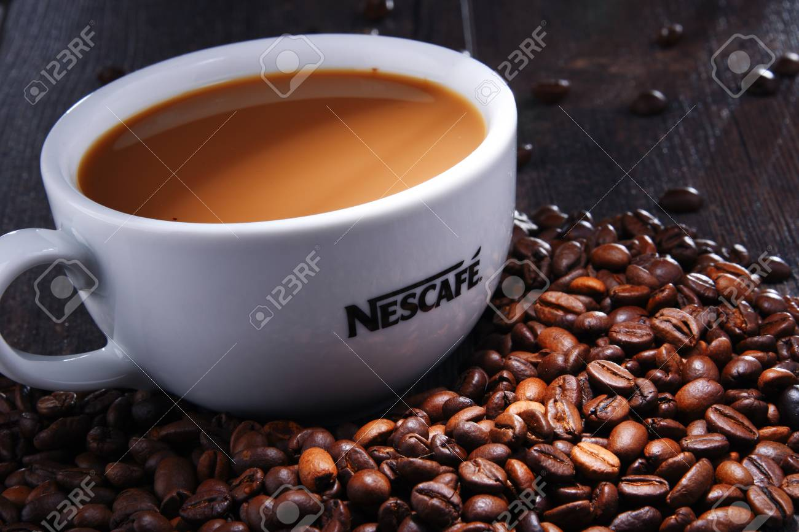
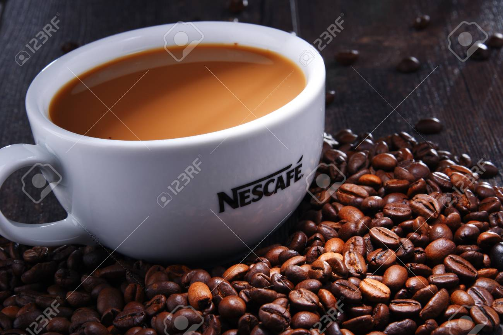
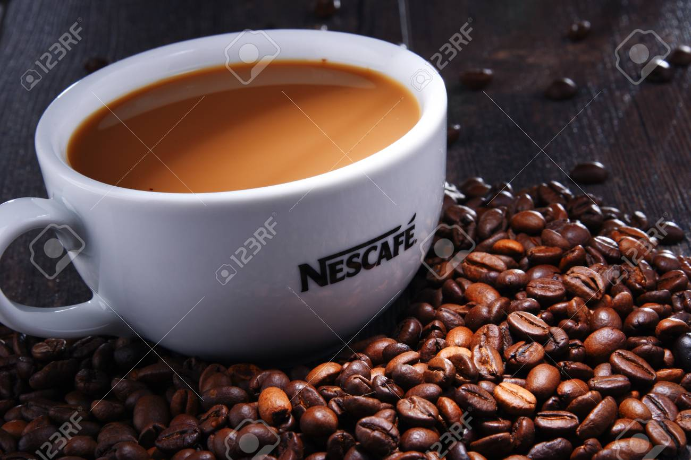

Trung Nguyen coffee is most famous for its strong taste and aroma. It is the leading local brand in Vietnam and a big exporter - you can find Trung Nguyen coffee in over 70 countries in the world. There is a wide range of products diverse in the mix of coffee beans and processing methods.
Trung Nguyen coffee has 3 main types, instant coffee, roasted coffee and distinctive (weasel) one.

Focusing more on the mild side, Vina Cafe is among the best choices for instant blended coffee. This brand is most famous for its creamy, hazelnutty flavor for those with a sweet tooth. Vina Cafe has been the coffee of our childhood and still most common among Vietnamese households. The most popular ones are VinaCafe 3-in-1, Wake-up Cafe with Weasel Flavor.
NESCAFE - the famous worldwide brand, comes with a lot of choices for the discerning market of Vietnam coffee connoisseurs. Among their products, instants ones are top of mind. Their blended coffee comes in different levels of strong tastes that can be no less delicious than their ground coffee counterparts. Their NESCAFE cans Mocha/Latte are a good choice when you want just a pack of ready-made goodness.